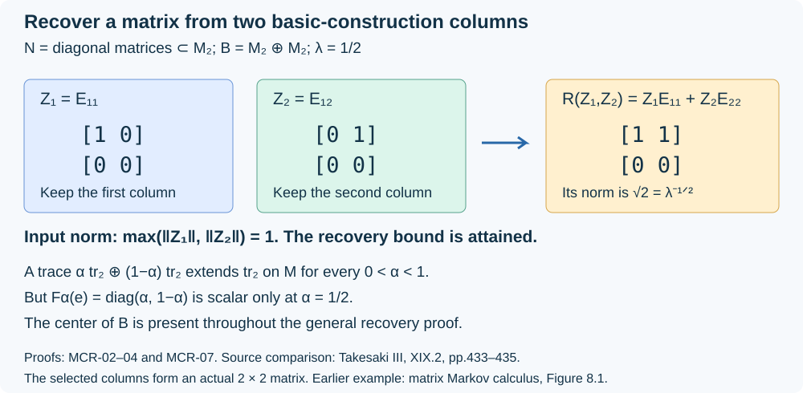

Markov expectations and coefficient recovery
Original lesson by OpenAI Codex, GPT-6 Astra, Ultra. New text and figure: CC0.
A projection onto a smaller algebra remembers an operator through one of its columns. A Markov trace lets a conditional expectation recover that column as a bounded element of the original algebra. This works for finite algebras with centers. We prove the recovery formula at that generality, extend its estimate to matrices, and derive a completely positive order bound. Finite matrix coordinates explain exactly when a given trace admits a Markov extension.
Throughout, \(N\subseteq M\) is a unital inclusion of nonzero finite von Neumann algebras, and \(\tau\) is a faithful normal tracial state on \(M\). Separability and factoriality are not assumed unless stated. Write \(E:M\to N\) for the \(\tau\)-preserving normal expectation. Its complete proof is Constructing the trace-preserving projection on every positive value through Bimodule order, uniqueness and the exact Hilbert projection; the tracial Hilbert space and both multiplication actions are constructed in Complete norms on actual measurable operators and The Hilbert space behind the trace.
The projection and its dense coefficient algebra
On \(H=L^2(M,\tau)\), put \(\Omega=\widehat1\) and let \(e\) project onto \(L^2(N,\tau)\). Left multiplication identifies \(M\) with an algebra on \(H\). Right multiplication is \(R_b\widehat a=\widehat{ab}\). Trace preservation and bimodularity give
\[ e\widehat a=\widehat{E(a)},\qquad eae=E(a)e,\qquad e\Omega=\Omega. \tag{MCR.1} \]Indeed, for \(b\in N\), \(\tau(b^*(a-E(a)))=0\), which characterizes the orthogonal projection. Apply this on the dense bounded vectors to obtain the compression identity.
Set \(B=\{M,e\}''\). The tracial commutation theorem TI-15 gives \(M'=R(M)\). A right multiplier \(R_b\) commuting with \(e\) satisfies
\[ \widehat b=R_be\Omega=eR_b\Omega=\widehat{E(b)}, \]so \(b\in N\). Conversely \(eR_b=R_be\) for \(b\in N\), by bimodularity. Taking commutants proves
\[ B=R(N)'. \tag{MCR.2} \]The linear span \(I=\operatorname{span}(MeM)\) is a *-algebra by (MCR.1), and it acts nondegenerately: \(I H\) contains every \(a e\Omega=\widehat a\). It has the same commutant as \(B\). To see the nontrivial inclusion, if \(T\) commutes with \(I\), then it commutes with \(e\), and for \(a,c\in M\),
\[ (Ta-aT)c e=Tace-aTce=aceT-aceT=0. \]The ranges of the \(ce\)'s span a dense subspace, so \(Ta=aT\). We next justify ultraweak density, including the fact that \(I\) need not contain \(1\).
For a finite subset \(F\subset I\), put \(t_F=\sum_{a\in F}aa^*\). The positive contractions
\[ q_{F,\delta}=t_F(t_F+\delta1)^{-1}\qquad(\delta>0) \]belong to the norm closure of \(I\): approximate the inverse by polynomials using The bounded prerequisite boundary, then multiply by \(t_F\). For \(a\in F\), the same functional calculus gives
\[ \|(1-q_{F,\delta})a\|^2 \le\|(1-q_{F,\delta})t_F(1-q_{F,\delta})\| \le\delta/4. \]Since \(IH\) is dense, these contractions converge strongly to \(1\), directed by enlarging \(F\) and decreasing \(\delta\).
Here is the countable-amplification version of the argument in Finite-vector approximation and the bicommutant through The ultraweak convergence needed by finite cutoffs. For a square-summable sequence \(\Xi=(\xi_j)\in H^{\mathbb N}\), let \(L=\overline{\{\operatorname{diag}(a)\Xi:a\in I\}}\). The contraction bound and a finite-head, square-summable-tail estimate show that \(\operatorname{diag}(q_{F,\delta})\Xi\to\Xi\). Norm approximation by elements of \(I\) therefore gives \(\Xi\in L\). The orthogonal projection onto \(L\) commutes with every diagonal \(a\), and each of its matrix entries belongs to \(I'=B'\). Consequently it also commutes with every diagonal \(X\), \(X\in B\). Thus \(\operatorname{diag}(X)\Xi\in L\).
It follows that \(a\in I\) can approximate \(X\) in any prescribed finite collection of square-sum seminorms, by combining their sequences into one \(\Xi\). Every ultraweak functional is a sum \(\sum_j\langle\,\cdot\,\xi_j,\eta_j\rangle\) with both sequences square summable, as in BK-03; Cauchy–Schwarz bounds its error by the corresponding square-sum seminorm times \(\|(\eta_j)\|\). This proves that \(I\) is ultraweakly dense in \(B\), without assuming norm density or simplicity.
Compression is ultraweakly continuous, and \(e I e=Ne\), so
\[ eBe=Ne. \tag{MCR.3} \]The image \(Ne\) is ultraweakly closed: its representation on \(eH=L^2(N)\) is faithful and normal, as in TI-15. Finally \(a\mapsto ae\) is injective, since \(ae\Omega=\widehat a\) and \(\tau\) is faithful. These facts hold with arbitrary centers.
What the Markov condition actually requires
Assume \(B\) has a faithful normal tracial state \(\tau_1\) extending \(\tau\). Let \(F:B\to M\) preserve \(\tau_1\). For a unital von Neumann subalgebra \(P\subseteq B\), let \(E_P^B\) be its \(\tau_1\)-preserving expectation. A \((\lambda,P)\)-Markov trace, for \(\lambda>0\), means
\[ E_P^B(e)=\lambda1. \tag{MCR.4} \]Equivalently,
\[ \tau_1(xe)=\lambda\tau_1(x)\qquad(x\in P). \tag{MCR.5} \]One implication follows by trace preservation; for the other, test the difference \(E_P^B(e)-\lambda1\) against its adjoint in \(P\). We use \(P=N\) and \(P=M\).
Lemma. The \((\lambda,N)\) and \((\lambda,M)\) conditions are equivalent.
For \(x\in M\), traciality and compression give
\[ \tau_1(xe)=\tau_1(exe)=\tau_1(E(x)e). \tag{MCR.6} \]The \(N\)-condition makes the last expression \(\lambda\tau(E(x))=\lambda\tau(x)\), proving the \(M\)-condition. Its restriction proves the converse. Thus the condition can be tested on the smaller algebra, although its useful consequence is
\[ F(e)=\lambda1,\qquad F(aeb)=\lambda ab \quad(a,b\in M). \tag{MCR.7} \]We have \(0<\lambda\le1\) because \(F\) is positive and unital. Also \(\tau_1(e)=\lambda\). If \(\lambda=1\), faithfulness gives \(e=1\), hence \(N=M\). Conversely the identity inclusion has \(e=1\) and \(\lambda=1\).
An extending tracial state need not be Markov. Section 07 gives an explicit example. We keep \(\lambda^{-1}\) as the Markov parameter; a scalar factor index is used only in Section 06.
Recovering the column, including matrix bounds
Theorem. Under the \((\lambda,M)\)-Markov condition, the normal linear map
\[ \mathcal R:B\longrightarrow M,\qquad \mathcal R(X)=\lambda^{-1}F(Xe) \tag{MCR.8} \]satisfies
\[ \mathcal R(X)e=Xe,\qquad Be=Me,\qquad \|\mathcal R\|_{\mathrm{cb}}\le\lambda^{-1/2}. \tag{MCR.9} \]Here the completely bounded norm is the supremum of the norms of all entrywise matrix amplifications. The coefficient in \(\mathcal R(X)e=Xe\) is unique.
For \(X=aeb\), equations (MCR.1) and (MCR.7) give
\[ \mathcal R(aeb)=aE(b),\qquad \mathcal R(aeb)e=aE(b)e=aebe. \]Both sides of the asserted column identity are ultraweakly continuous in \(X\). The density from Section 01 proves it on all of \(B\). This proves \(Be=Me\), and injectivity of \(a\mapsto ae\) proves uniqueness.
Put \(r=\mathcal R(X)\). The column identity gives \(XeX^*=rer^*\), so positivity and bimodularity of \(F\) imply
\[ \lambda rr^*=F(XeX^*)\le\|X\|^2\,1. \tag{MCR.10} \]Consequently \(\|r\|\le\lambda^{-1/2}\|X\|\). Normality follows directly from (MCR.8).
This argument survives at every matrix size. On \(M_k(B)\), use \(e_k=1_k\otimes e\), \(F_k=\operatorname{id}_{M_k}\otimes F\) and the entrywise column identity. Then
\[ \begin{gathered} \mathcal R_k(X)e_k=Xe_k,\qquad F_k(e_k)=\lambda1_k,\\ \lambda\mathcal R_k(X)\mathcal R_k(X)^* =F_k(Xe_kX^*)\le\|X\|^2\,1_k. \end{gathered} \tag{MCR.11} \]This proves the uniform matrix bound in (MCR.9). It does not claim that \(\mathcal R\) is positive.
The theorem also controls bounded vectors for the smaller algebra. If \(x\in L^2(M)\) and
\[ C=\sup_{\substack{y\in N\\\|y\|_2\le1}}\|xy\|_2<\infty, \]the map \(\widehat y\mapsto xy\) extends from \(L^2(N)\) to a bounded \(T_x:L^2(N)\to H\) with norm \(C\). The operator \(X=T_xe\) commutes with \(R(N)\), so \(X\in B\), \(Xe=X\), and \(X\Omega=x\). Evaluating the column identity at \(\Omega\) gives \(x=\widehat{\mathcal R(X)}\). The injective measurable-operator realization in TI-09 therefore makes \(x\) a bounded element of \(M\), with
\[ \|x\|\le\lambda^{-1/2}C. \tag{MCR.12} \]Every product \(xy\) in this argument is the bounded right action on \(L^2(M)\). No unbounded element is inserted into \(F\). This extends the finite-factor bounded-vector recovery to the stated Markov inclusions with centers.
A completely positive lower bound for the expectation
Theorem. The map \(E-\lambda\operatorname{id}_M\) is completely positive.
Fix \(k\), write \(E_k=\operatorname{id}_{M_k}\otimes E\), and take \(a\in M_k(M)_+\). For \(\varepsilon>0\), put
\[ b=(E_k(a)+\varepsilon1_k)^{-1/2}\in M_k(N), \qquad X=a^{1/2}e_k b\in M_k(B). \tag{MCR.13} \]Because \(b\) commutes with \(e_k\), compression gives
\[ X^*X =bE_k(a)b\,e_k\le e_k. \]Thus \(\|X\|\le1\) and \(Xe_k=X\). Its unique recovered coefficient is \(a^{1/2}b\), because \(a^{1/2}be_k=X\). Equation (MCR.11) yields
\[ \|a^{1/2}b\|\le\lambda^{-1/2},\qquad bab\le\lambda^{-1}1_k. \]Conjugation by the bounded invertible \(b^{-1}\) gives
\[ a\le\lambda^{-1}(E_k(a)+\varepsilon1_k). \]Let \(\varepsilon\downarrow0\) in norm; the positive cone is norm closed. We obtain \(E_k(a)\ge\lambda a\). Since this holds for every \(k\), it is precisely complete positivity of \(E-\lambda\operatorname{id}_M\).
The matrix estimate is essential to this conclusion: positivity at \(k=1\) alone would not prove complete positivity. Section 07 gives a case attaining the constant.
The exact finite-dimensional trace criterion
Suppose now
\[ N=\bigoplus_{i=1}^{r}M_{m_i}(\mathbb C) \subseteq M=\bigoplus_{j=1}^{s}M_{n_j}(\mathbb C). \]Let \(A=(a_{ij})\in M_{r,s}(\mathbb Z_{\ge0})\) record inclusion multiplicities, so \(n_j=\sum_i m_i a_{ij}\). No row or column is zero. Write
\[ \tau(x)=\sum_j t_j\operatorname{Tr}_{n_j}(x_j), \qquad t_j>0,\qquad\sum_j n_jt_j=1, \tag{MCR.14} \]using unnormalized matrix traces. The restricted trace has minimal-projection weights \(u=At\): a minimal projection in block \(i\) has rank \(a_{ij}\) in block \(j\).
Here are the needed basic-construction coordinates. In \(L^2(M)\), the right \(M_{m_i}\)-representation has multiplicity
\[ \ell_i=\sum_j a_{ij}n_j. \]Indeed a right \(M_{n_j}\)-module consists of \(n_j\) copies of its defining right representation, whose restriction to \(N\) has \(a_{ij}\) copies of the \(i\)-th right representation. This follows directly by splitting the matrix-unit rows and then the inclusion's block multiplicities. The commutant of \(m_i\times m_i\) matrices on \(\mathbb C^{\ell_i}\otimes\mathbb C^{m_i}\) is \(M_{\ell_i}\otimes1\): commuting with the diagonal and off-diagonal units forces exactly this form. Consequently (MCR.2) gives
\[ B\cong\bigoplus_i M_{\ell_i}(\mathbb C). \tag{MCR.15} \]Left \(M_{n_j}\) occurs with multiplicity \(a_{ij}\) in the \(i\)-th block of \(B\), so the inclusion matrix of \(M\subseteq B\) is \(A^{\mathsf T}\). The submodule \(L^2(N)\) has \(m_i\) right multiplicity coordinates of type \(i\); therefore \(e\) has rank \(m_i\) in that block. If \(f\) is a minimal projection in \(N_i\), then \(fe\) has rank one in that basic block.
A trace \(\tau_1\) on \(B\) with minimal-projection weights \(v_i>0\) extends \(\tau\) exactly when
\[ t=A^{\mathsf T}v. \tag{MCR.16} \]Moreover its Markov condition is exactly \(v_i=\lambda u_i\). For necessity, test (MCR.5) on a minimal \(f\in N_i\), using the rank-one calculation. For sufficiency, the functional \(x\mapsto\tau_1(xe)\) on \(N\) is tracial, since \(e\) commutes with \(N\); its values on minimal projections determine it. Thus \(v=\lambda At\), and the extension condition becomes
\[ \boxed{\ A^{\mathsf T}A\,t=\lambda^{-1}t.\ } \tag{MCR.17} \]Conversely, if (MCR.17) holds for a prescribed faithful \(t\), set \(v=\lambda At\). It is strictly positive because no row of \(A\) vanishes. Its normalization follows without any factoriality:
\[ \sum_i\ell_i v_i =\sum_j n_j(A^{\mathsf T}v)_j =\sum_j n_jt_j=1. \]It defines the required faithful Markov extension, uniquely. This proves the criterion for arbitrary finite direct sums, with no connectedness or irreducibility assumption on \(A\). It tests the prescribed trace, not just the existence of some trace.
Factor bases and the side of the coefficients
Return in this section only to \(\mathrm{II}_1\) factors with finite index \(d=[M:N]\). Fix both traces and both actions proves that the normalized basic trace is Markov with \(\lambda=d^{-1}\). Let \(n=\lfloor d\rfloor\), \(s=d-n\), choose \(p\in N\) with \(\tau(p)=s\), and put
\[ p_1=\cdots=p_n=1,\qquad p_{n+1}=p,\qquad P=\operatorname{diag}(p_1,\ldots,p_{n+1}). \]The complete earlier finite-basis proof, Theorem 3.2, and its coordinate realization in Recover every basis from its Hilbert-module coordinates, give \(a_i\in M\) with
\[ \begin{gathered} a_i=a_ip_i,\qquad E(a_i^*a_j)=\delta_{ij}p_i,\qquad \sum_i a_i e a_i^*=1,\\ \sum_i a_i a_i^*=d1,\qquad x=\sum_i a_iE(a_i^*x)\quad(x\in M). \end{gathered} \tag{MCR.18} \]The construction prescribes orthogonal final projections of traces \(\tau(p_i)/d\) in \(B\), compares each with \(p_i e\), and recovers their partial isometries by (MCR.8). The cited earlier proof supplies every projection-existence and comparison step. It also proves the converse: merely assuming the displayed inner-product identities with these \(p_i\)'s makes \(a_i e\) have orthogonal ranges whose traces sum to one, so their range sum is one. The expansion, supported coefficient spaces and norm bounds follow. Thus no completeness hypothesis on an alleged basis is being omitted.
For clarity, the change of basis can be checked directly. If \((b_j)\) is another such family with the same \(p_i\)'s, put
\[ c_{ij}=E(a_i^*b_j)\in p_iNp_j. \tag{MCR.19} \]The expansion gives \(b_j=\sum_i a_i c_{ij}\). Applying \(E\) to \(b_j^*b_k\) gives
\[ \sum_i c_{ij}^*c_{ik}=\delta_{jk}p_j, \]so \(C^*C=P\). Conversely the expansion of \(a_i\) in the \(b_j\)-basis has coefficients \(E(b_j^*a_i)=c_{ij}^*\). Substituting it into the first expansion and using uniqueness of supported coefficients gives \(CC^*=P\). Therefore \(C\) is a unitary in \(P M_{n+1}(N)P\), whose identity is \(P\).
The coefficient map identifies \(M_N\) with the finite projective right module \(PN^{n+1}\), and extends to the right Hilbert-module unitary in FBV-05. If \(s=0\), the last coordinate and last basis vector are zero. If a complete orthonormal basis consisted of \(k\) unitaries, its sum \(\sum_i a_i a_i^*=k1\) would force \(d=k\). Hence nonintegral index excludes such a basis; the converse existence of a unitary basis is not asserted.
Coefficients in (MCR.18) stand on the right. As the earlier finite-bases lesson already explains, the left order printed in Theorem XIX.2.27(ii)(g) is incompatible with the stated coefficient \(E(a_i^*x)\). For the identity inclusion \(N=M=M_2\bar\otimes Q\), take the one-element basis \(a=(E_{12}+E_{21})\otimes1\) and \(x=E_{11}\otimes1\). Then \(a(a^*x)=x\), while \((a^*x)a=E_{22}\otimes1\). Taking adjoints gives the correct left-coordinate formula \(x=\sum_i E(xa_i)a_i^*\).
Two columns expose the center and the sharp constant
Let \(N\) be the diagonal algebra in \(M=M_2(\mathbb C)\), with \(\tau=\operatorname{tr}_2\). Separate \(L^2(M)\) into its first and second columns. The right diagonal action has those two eigenspaces, so
\[ B=M_2\oplus M_2,\qquad a\in M\longmapsto(a,a),\qquad e=(E_{11},E_{22}). \tag{MCR.20} \]For \(0<\alpha<1\), the faithful normal trace
\[ \tau_{1,\alpha}(Z_1,Z_2) =\alpha\operatorname{tr}_2(Z_1) +(1-\alpha)\operatorname{tr}_2(Z_2) \]extends \(\tau\). Its expectation onto the diagonal copy of \(M\) is
\[ F_\alpha(Z_1,Z_2)=\alpha Z_1+(1-\alpha)Z_2, \qquad F_\alpha(e)= \begin{pmatrix}\alpha&0\\0&1-\alpha\end{pmatrix}. \tag{MCR.21} \]Trace pairing verifies the formula for \(F_\alpha\). It is Markov precisely at \(\alpha=1/2\), with \(\lambda=1/2\). This also follows from (MCR.17): \(A=(1,1)^{\mathsf T}\), \(t=1/2\), and \(A^{\mathsf T}A=2\).
At that trace, coefficient recovery simply joins the selected columns:
\[ \mathcal R(Z_1,Z_2)=Z_1E_{11}+Z_2E_{22}. \tag{MCR.22} \]Choose \(Z_1=E_{11}\), \(Z_2=E_{12}\). Their direct-sum norm is one, but
\[ \mathcal R(Z_1,Z_2)= \begin{pmatrix}1&1\\0&0\end{pmatrix}, \qquad \|\mathcal R(Z_1,Z_2)\|=\sqrt2. \]Thus the \(\lambda^{-1/2}\) bound is attained already without amplification. Here \(B\) is not a factor: the general proof cannot assume it is one.

The complete-positive lower bound is equally explicit. With \(u=\operatorname{diag}(1,-1)\),
\[ E(x)=\tfrac12(x+uxu),\qquad E-\tfrac12\operatorname{id}=\tfrac12\operatorname{Ad}u. \]The latter is completely positive. For \(a=\begin{pmatrix}1&1\\1&1\end{pmatrix}\ge0\), the smallest eigenvalue of \(E(a)-c a\) is \(1-2c\), so no \(c>1/2\) gives even positivity. The example checks the matrix-order constant as well as the recovery bound.
Source scope and corrections
The source is Masamichi Takesaki, Theory of Operator Algebras III, XIX.2, pp.433–438. The normality of the traces used in the standard \(L^2\) representation and in trace-preserving expectations is explicit throughout this lesson.
| Source item | Complete location and qualification |
|---|---|
| Definition 2.23 | Section 02, including an arbitrary test subalgebra \(P\) and the trace-pairing characterization. |
| Lemma 2.24 | Section 02; both \(N\)- and \(M\)-tests are equivalent, with no factor assumption. |
| Proposition 2.25 | Section 05; all matrix blocks, minimal-projection trace weights, normalization, necessity and sufficiency. |
| Lemma 2.26 | Sections 01–03; normal recovery on the entire basic construction for finite algebras with centers. Section 04 adds its completely positive order consequence. |
| Theorem 2.27 | Section 06, the complete earlier finite-basis theorem, and FBV-05; existence, the converse from the inner-product conditions, all supported coordinates and unitary change of basis. |
| Remark 2.28 | Section 06; finite projectivity and the obstruction to a unitary orthonormal basis at nonintegral index. |
The proof of Lemma 2.26 on printed p.435 calls the basic construction a factor and invokes simplicity, although the lemma permits nonfactors. The ultraweak density and normal-map argument in Sections 01–03 proves the stated general conclusion without those extra assumptions. Its coefficient is \(\lambda^{-1}\); the notation \([M:N]\) has the scalar factor interpretation only when that interpretation is justified. The matrix example makes this distinction concrete.
Theorem 2.27's right-coefficient correction is already proved in the earlier finite-bases reading. Its change-of-basis matrix belongs to the supported matrix algebra over \(N\); both its left and right unitary identities are included here. No classification of principal graphs is claimed by these general expectation and module statements.
The earlier matrix Markov calculus already proves the trace criterion in Theorem 8.4 and general finite-algebra recovery in Proposition 8.8, including the correction of the factor-only argument. Its Figure 8.1 also gives the diagonal two-column example and the sharp norm estimate. These are existing programme proofs, not previously unwritten prerequisites. The present lesson gives direct proofs and develops the recovery estimate at every matrix size and its completely positive order consequence.